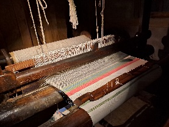

10. Weefgetouw

Ga naar plattegrond
Boeren probeerden zoveel mogelijk zelf te maken.
In de winter, als op het land weinig werk was, weefden ze kleding van vlas en wol.
Vrouwen en kinderen sponnen het garen, de mannen weefden op een horizontaal weefgetouw.
Dit weefgetouw is uit ongeveer 1650 en heeft twee pedalen.
Daarmee til je steeds de helft van de draden omhoog.
Dan gooi je de spoel ertussen door, in het Twents heet dat “smieten”.
De draden in de lengte heten de schering, de draad die je er dwars doorheen schiet heet inslag.
Met de weeflade duw je de draad aan.
De boer kon garen in verschillende kleuren op de schietspoel doen, maar meestal werd de natuurlijke kleur gebruikt. Het weefsel werd daarna gebleekt.
Het doek was ongeveer één el breed, de afstand tussen de ellenbogen van de boer, zo’n 69 centimeter.
Een wever maakte ongeveer twee meter per dag.
De stof was voor eigen gebruik of voor verkoop aan de marskramer, om wat bij te verdienen.